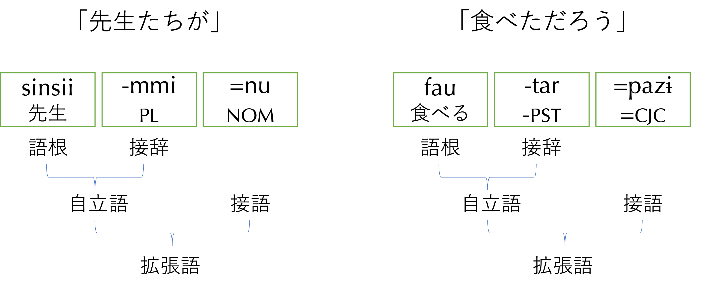
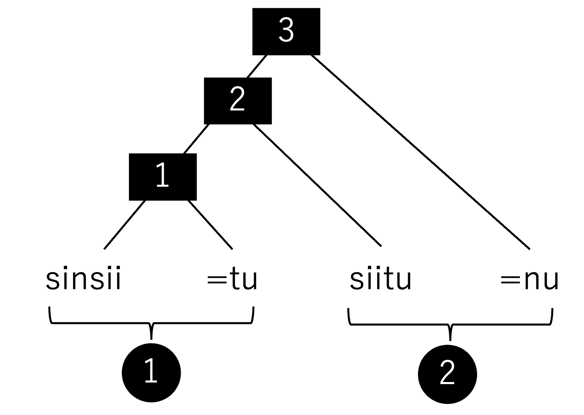
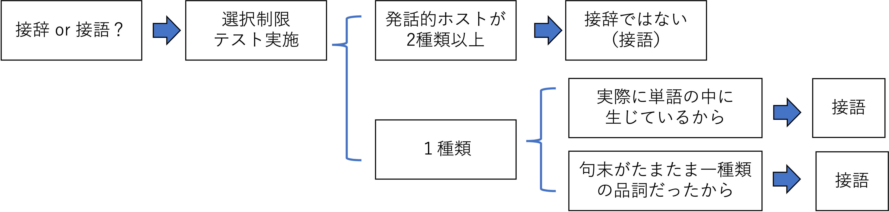

伊良部島で調査を開始して1ヶ月ほど経った。400語の基礎語彙調査をあらかた終えているこの時期には、これまでに収集した語彙と、語彙と一緒に時々習う例文（例：「頭」という語彙と一緒に話者がたまたま教えてくれた「頭が痛い」）もノートにたくさん記録されていると思う。しかしその表記は安定せず、単語の境界のつもりで入れてみたスペースも一貫性がない。これからの時期は、いよいよ、「聞いたままの音素連続」の記録から、その内部構造の分析にシフトしていくことになる。巷で形態素分析と呼ばれる作業を本格化させるということである。
例文を丁寧に発話してもらったとき、話者が息継ぎをしたり区切ったりする切れ目が存在する。以下の録音データ（音素表記で書き起こし済み）を聴いてみて、発話の切れ目ごとに区切ってみよう。
nkjaandukibannkibannupžtutuujakiitiinupžtutu dusɨatarca.
おそらく、以下のような発話の切れ目になっていたと思う。
私の経験上、琉球諸語であれ本土方言であれ、そして標準語の場合でも、名詞や動詞に、格助詞や副助詞（「も」「さえ」的な形態素）、モダリティ助詞（「だろう」「はず（だ）」的な形態素）、終助詞（「ね」「よ」的な形態素）、あるいは接続助詞（「ので」「から」「なら」的な形態素）をくっつけてできたまとまりは、ここで例示したように、丁寧な「逐語的発話」においては1つの発話の切れ目になっていることが普通である。そしてこの単位は、多くの場合、音韻的なまとまりにもなっている。例えばアクセント規則を考える上での基礎単位でもあり、またリエゾンや子音の同化、脱落などなどの音韻規則などの適用される範囲（ドメイン）でもある。この、音声的に明確なまとまりをもち、経験的にも「便利」な単位を拡張語と呼ぶことにする1この用語は伊良部島方言の記述文法書で導入したものであり、ヌートカ語の記述を行った中山(2007)が、自立語と接語（の連続）からなる音声的まとまりに対して用いた用語に倣った（中山俊秀「ヌートカ語」中山俊秀・山越康裕編『文法を描く―フィールドワークに基づく諸言語の文法スケッチ・2』東京外国語大学アジア・アフリカ言語文化研究所, 2007, pp.197-228）。学校文法で文節と呼ぶ単位に相当するが、文節の明確な定義はなく、「ね」が入る要素、のような「テスト」が提示されるのみである。文節という用語をもし使うのであれば、自分の記述でそれが一体何を指しうるのかについて、きちんと定義しておくのを忘れずに。。もし、あなたの記述する言語で、拡張語が発話の区切りとして典型的な単位になっているなら、例文を記録する場合に拡張語ごとにスペースを入れておくと良いだろう2もし、あなたの記述している言語が、拡張語よりも小さい、あるいは大きい単位で例文を区切った方が便利である、あるいは有効であると考えるなら、そう考えた時点で区切れ目を変えていけば良い。結局、第一仮説としてのとっかかりは、それが合理的ではない仮説なら、いつか必ず言語体系の側から「ツッコミ」が入り、あなたはそれに気づいて修正を迫られる。。
拡張語は言語学者が単語すなわち自立語とみなす単位よりは大きい。上で述べたように、自立語である名詞や動詞に付属する文法的な諸要素（例えば上で助詞と呼んだもの）が連なって1つの拡張語を構成する。今、自立語の外側にあって、それに付属する要素を接語（付属語とも）と呼んで、その境界にイコールサイン（=）を使用する、と決めよう。上の説明から明らかに、接語は自立語ほどの「自立性」を持たない。なぜなら、自立語にくっついてしか出てこられないからである。一方で、接語は自立語の内部に取り込まれるほど「完全従属」したものでもない。あくまで自立語の外にあって、外部要素としての地位を保っており、ただ単独で発話することができないために、自立語にくっついて生じる。
接語と同様に従属的な要素である接辞は、接語と違って自立語に「完全従属」し、常に語の内部要素として生じる。よって、接辞境界は接語境界と区別する必要がある3区別する必要性を感じない、という人もいるかもしれない。しかし考えてみてほしい。品詞分類や単語の内部構造の記述を行う立場に立った時、語の内部にある要素か否かは決定的に重要な情報であろう。語という単位が確定しなくては、その分類（品詞分類）もできず、その内部構造（形態論）の記述もできないからである。例えば、日本語の拡張語 /kireina/「綺麗な」があった時、従属的な要素 /na/ が単語の中にあるならこの「語」は活用することになるが、実際はこれは接語であって、/kirei/ という自立語は活用しない。後続する接語 /na/ はコピュラとして品詞分類でき、その結果見えてくるのは、「形容動詞」なる品詞の強烈な名詞性である。。慣習にしたがってハイフンを使う。接辞に限らず、複合語の語根同士の境界も、重複形の語基とコピーとの境界も、とにかく語の内部要素であればハイフンを使っても良い4接辞境界と区別してチルダを使うことが一部で推奨されているが、そこまで浸透した慣習にはなっていない。ハイフンとイコールサインは「単語の内部要素かそうでないか」という語性 (wordhood) の記号であるのに対し、重複境界のチルダや複合語根境界のプラスサインは、さらに単語の作り方（形態法）も表示している記号であり、レベルが異なるものだからである。。

拡張語ごとに記録した例文は、そのままではあまり有効な分析対象にはならない。拡張語に含まれるさまざまな文法的要素を切り出して、それらに名前をつけておくことで、初めて有効なデータとなる。つまり、ハイフンで接辞を切り出し、イコールサインで接語を切り出していく作業が必要になる。
a. 拡張語ごとの分割（スペース）：pisirruba fautardarai
b. 自立語と接語の分割（イコールサイン）：pisir=ru=ba fautar=dara=i
c. 自立語内部の分割（ハイフン）：pisir=ru=ba fau-tar=dara=i
ところで、(5) で示した例文の境界表示法の方針自体は至極分りやすく、スペース、イコールサイン、ハイフンを使いながら例文を区切っていくことのイメージはよくつくと思う。ところが、実際に自分の記述対象言語で例文の境界表示を始めてみると、すぐに以下の困難にぶつかる。「自立語はどこまで続いていると見做せばいいのか？」、言い換えれば「接辞と接語の区別はどうやって行うのか？」という問題である。この問題、すなわち語の境界や語の同定にまつわる問題（語性）はまさに言語個別的で、あなたの扱う言語を観察しながら、あなた自身の指針で行なっていく必要がある。
以下では、伊良部島方言の拡張語の具体例「先生たちが」「食べただろう」を例に、この言語の自立語、接辞、接語を区別する方法を解説する。一連のプロセスとロジックの組み立て方を参考に、各自の言語記述に役立ててほしい。
結論を先取りして示しておこう。「先生たちが」「食べただろう」という拡張語は図1のように分析できる。「先生たちが」の場合、sinsiiが語根（自立語の中で接辞を全て取り除いた語彙的な意味を担う部分）で、これが複数接辞-mmiをとり、これら2つの形態素で1つの自立語たる名詞を形成している。その外側に主格助詞=nuが接語としてくっついている。「食べただろう」の場合、fauが語根で、これがテンス接辞-tarをとり、これら2つで1つの自立語たる動詞を形成している。その外側にモダリティ助詞=pazɨ「だろう」(conjectural; グロスはCJC) が接語としてくっついている。
拡張語同士であれば、その語順の入れ替えは自由とまではいかなくとも、可能なことが多い。最小の拡張語（接語をすべて取り去ったもの）を自立語であると考えると、自立語同士の順番もまた、入れ替え可能な場合が見つかる5より正確には、拡張語がいくつか連なって構成する句が、統語論的な操作の単位になっていて、最小の句（修飾部分などを一切伴わない、主要部だけの句）が、我々が今問題にしている拡張語である。。
一方、自立語の内部要素、すなわち語根と接辞を入れ替えることは決してできない。例えば以下の例「ちびっこたち（直訳：子供っこたち）」において許される順序は (8) だけで、それ以外の論理的に可能な5通りは全く容認されないし、自由発話にも決して見つからない6理論的には、形態論という領域と、統語論という領域の性質の違いとして考えることができる。形態論における形態素の操作とそのまとまり方は、統語論における語（以上の単位）の操作とそのまとまり方とかなり異なっているということである。。
a. *jarabi-mmi-gama
b. *mmi-jarabi-gama
c. *mmi-gama-jarabi
d. *gama-jarabi-mmi
e. *gama-mmi-jarabi
このように、自立語の内部要素の順番は固定している。語より大きな単位（拡張語同士、あるいは自立語同士）の順番は語の内部要素の辞順よりは自由である、と言えるのである。この重要な違いを利用して、接辞と接語を判別可能な場合がある。以下、どちらも名詞にくっついているように見える -mmi「たち（複数）」と =nu「が（主格助詞）」を検討してみよう。
a.
b.
今、ここで関わる形態素4つ（sinsii, tu, siitu, nu）の順番が sinsii-tu-siitu-nu というふうにテンプレートで固定されているなら、このようなことは決して起こらないはずである。最初の3つの順番が可変である時点で、その3つはそれぞれ語の内部要素とは言えないということになる。
では、nuについてはどうだろうか？(11c) に示すように、「先生と生徒」の外側にある主格助詞 nu が句全体に対してくっついている、と考えてみよう。
a. sinsii=tu siitu 「先生と生徒」
b. siitu=tu sinsii 「生徒と先生」
c-i.
c-ii.
ここでもし、(12a) のように考えて、nu が siitu と一緒に自立語を構成している（接辞になっている）と分析してしまうと、語順を入れ替えた時、nu は siitu と一緒に文頭に移動するはずである (12b)。しかし、実際はそうならない。やはり、主格助詞を接語として、自立語の外側にあって句に接続する拘束形式だと考えた方が良い。
a. [sinsii tu siitu-nu]Phrase 「生徒と先生が」
b. *siitu-nu tu sinsii 「（直訳：）生徒がと先生」
では、今度は、単独で出現できない点では主格助詞と同じように見える複数形態素の -mmi について、同じように順序入れ替えテストをしてみる。
a.
b.
(13b) において、複数形態素の mmi が、直前の名詞語根 siitu と一緒に文頭に移動していることに注意されたい。移動の対象になる siitu mmi は、それ全体で1つの自立語と見るのが合理的である。すなわち、mmi は、主格助詞の =nu（接語）と違い、自立語の内部要素と見た方が良さそうだ（つまり接辞だ）、ということがわかる。
こうして、図1に示した通り、複数接辞 -mmi は確かに接辞であるといえ、主格助詞 =nu は確かに接語であると言える。どちらも名詞にくっついているように見える点では同じだが、くっついているレベル（レイヤー）が異なるのである。-mmi は名詞語根にくっついて名詞という自立語を構成するが、=nu は名詞句にくっついている。
接語と接辞は、その接続する対象が異なる、ということがよくわかってきたと思う。接語が句にくっつき、接辞が語の内部要素（例えば語根）にくっつく、というこの性質は、これらが見せる選択制限の違いに結びつくことが多い。
先に進む前に、ここで「くっつく」というインフォーマルな言い方を少し正確にしておこう。まず、接語は句全体を構造的ホストにし、構造的にこの句全体に接続する。構造的に接続する、というのは、先にみた (11c-i, 11c-ii) や (15) のように、その接語が名詞句という構成素全体と、新たな構成素を作る、というような意味である7拡張名詞句という用語に関して、構成素3の主要部が名詞句であると主張しているわけではなく、単に便宜的に名前をつけただけである。名詞句に何ら役割がない段階に対して、その文法的役割を明示する格助詞が結びついた拡張名詞句を考えるとき、その主要部はむしろ格助詞の方にあると見ても良い。生成文法では、主格のような格標識をDP のヘッドとする考え方や、KP (Case Phrase) のヘッドとする考え方もある。。

一方、この拡張名詞句を、今度は実際の発話のまとまりという観点で見ると、sinsii=tu がひとまとまりの拡張語であり、siitu=nu が別の拡張語である。このとき、共格助詞=tu も主格助詞=nu も、それぞれ直前の要素を発話的ホストに接続して発話される、と言える。
以下は伊良部島方言のモダリティ助詞 =pazɨ が述語句に後続する例である。述語句の終端は動詞述語なら動詞、形容詞述語なら形容詞、名詞述語なら名詞なので、結果的に =pazɨ はこれら3つの品詞要素と共起していることになる。
a.
b.
c.
接辞の場合、「特定のタイプの語根/語幹」に接続する。つまり、接辞は1種類の品詞としか共起しない、という決定的な特徴がある。以下はテンス接辞の -tar（過去）の例である。
a.
b.
このテストによって、モダリティ助詞 =pazɨ は接辞ではない、ということができる。そしてこれは単独で生じることがないので、結果的にこれは（自立語ではなく）接語だと判定できる。
ただし、このテストを運用する際、以下の点に注意してほしい。「2種類以上の品詞要素を発話ホストにできない」場合、つまり、1種類の品詞要素にしか接続できないからといって、即座に「接辞だ」とは言えないということである。

句によっては、その句末要素がたまたま、ただ1種類の品詞で固定されている場合もある。例えば伊良部島方言の接続助詞 =suga「だけど」（逆接）は句に接続するが8節という用語は、述語を主要部として含み、項を支配するという内心的 (endocentric) な関係を考慮した場合の用語である。一方、この節というユニットは上位構造との相対的な外心的 (exocentric) な関係においては句として理解される。、句末がどんな品詞であっても良いわけでなく、=suga の発話的ホストは常に動詞であるという強い制限がある。
a.
b.
c.
これは、歴史的な観点から説明される「たまたま」である。=suga の =su は、伊良部島方言では形式名詞と呼ばれる =su「～の、～もの、～やつ」を起源とし、それに逆説の =ga が接続して出来上がった接続詞である。形式名詞 =su は、単独では出現できず、常に構造的ホストとして連体修飾節をとる。そして、この連体修飾節は必ず動詞で終わるという特徴がある。従って、=suga もまたこの特徴を引きずって、その発話的ホストが動詞に限定されてしまうのである。
a.
b.
意味の点で考えれば、「上がって下がる」という節全体に対して =suga が接続していると見ることができる。